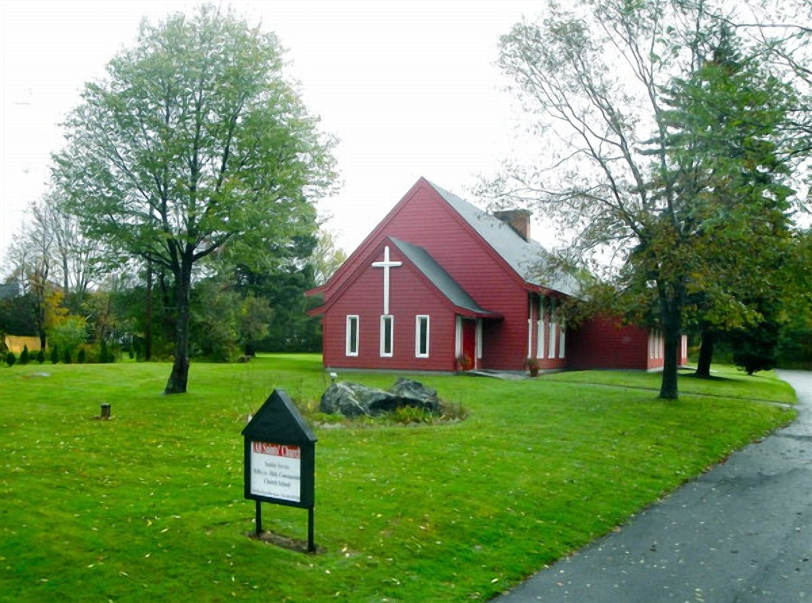

Come as you are. You are welcome here.
All Saints' is a family-friendly Episcopal congregation seeking to follow Jesus through prayer, worship, and service to our neighbors.

A parish with room for your questions and your story.
We are children of God ranging in all ages, all are welcome! We gather to pray, share Holy Communion, care for one another, and serve the wider Wolcott community.
Believer, doubter, or seeker, all are welcome to join us in worship and no prior knowledge is asked of you. Join us for worship, stay for coffee, sing with the choir, or spend a quiet moment in the prayer garden, however you wish to worship.
Find your place at All Saints'
Worship with us
Learn what happens during an Episcopal service and what to expect on your first Sunday.
Explore worship → CommunityShare parish life
Coffee fellowship, music, outreach, and simple ways to connect beyond Sunday worship.
See parish life → Open dailyVisit the prayer garden
A quiet space on the church grounds, open to the public for prayer and reflection.
Visit the garden →New to All Saints'? Your first visit can be simple.
Come in whatever you are comfortable wearing. Families and children are welcome, and you may participate as much or as little as you like.